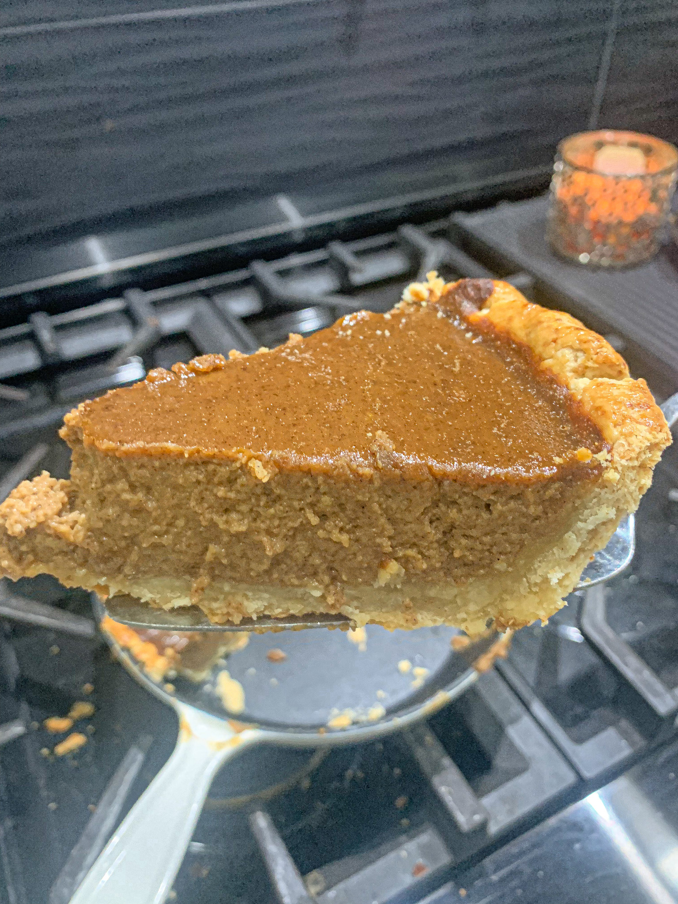

Pumpkin Pie Recipe

Description
This Easy Pumpkin Pie recipe is quick to assemble and uses common ingredients that are widely accessible. Anyone can bake this recipe quick and within an hour you have a delicious treat.
This Easy Pumpkin Pie recipe is quick to assemble and uses common ingredients that are widely accessible. Anyone can bake this recipe quick and within an hour you have a delicious treat.
Since it’s now October, fall baking is in full force. Everyone is craving a good pumpkin pie, so show off to you friends and family with this easy recipe. You don’t have to have any experience, and you don’t need any fancy equipment, just a mixing bowl. Save some money and make this yourself, as well as develop your baking skills and have some fun!
Ingredients
- 1 premade 9” pie crust (Graham Cracker Pie Crust)
- ⅓ cup sugar
- 2 tbs brown sugar
- 1½ tsp. ground cinnamon
- ¾ tsp. salt
- ½ tsp. ground ginger
- ½ tsp. ground cloves
- ½ tsp. ground nutmeg
- 2 large eggs plus 1 large egg yolk
- 1 can pumpkin (not pumpkin pie filling)
- 1 cup heavy cream
- 2 tsp. vanilla extract
- Whipped cream (for serving)
Directions
- Preheat oven to 325° Fahrenheit
- In a mixing bowl, whisk together sugar, brown sugar, cinnamon, salt, ginger, cloves, and nutmeg
- Beat in the eggs and egg yolk
- Add in the pumpkin, heavy cream, and vanilla, and mix
- Pour the mixture into the pre-made pie crust
- Bake for 30-45 minutes. To test, give the pan a gentle shake, and if the filling is super wobbly, it needs more time. If it only gives a very small wobble, it is ready. The top will also be a bit darker when it is ready